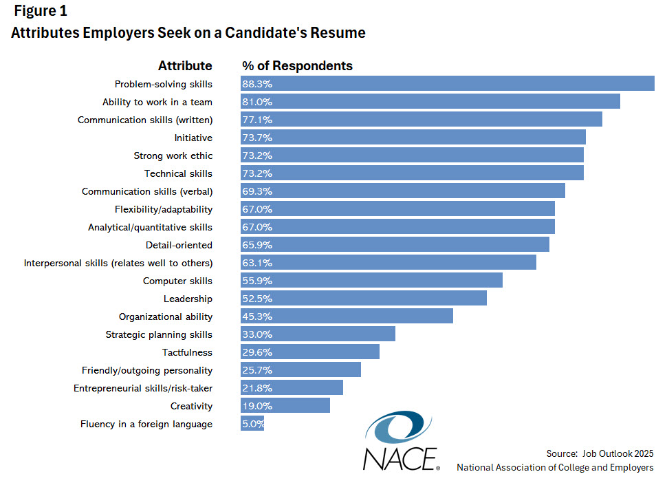

Essential Job Skills Affected by AI
Source note: Google AI answers, 11/2025.
Problem-solving is crucial in the workplace because it fosters adaptability, boosts team performance through collaboration and conflict resolution, and supports long-term career growth.
Employer Priorities
When employers were asked what they look for on resumes, nearly 90% said they want evidence of problem-solving ability, and nearly 80% want strong teamwork skills.
Written communication, initiative, strong work ethic, and technical skills were important to at least 70% of respondents. More than two-thirds also prioritized verbal communication, flexibility/adaptability, and analytical/quantitative skills.

The State of Critical Thinking
AI does not think Humans do
Link: The Age of AI Demands a Critical Thinking Renaissance
AI Lacks Contextual Understanding—Humans Don’t. Our Human imagination is critical, AI does the heavy lifting and at times the AI will 'Hallucinate' giving bizarre answers.
2026 AI Jobs Barometer
Link: Changing Job Outlook for 2026
Entry Level jobs are expected to see significant changes due to AI integration, with an emphasis on digital literacy and adaptability. "While overall early-career job postings have flatlined in highly AI exposed sectors, 'seniorised' entry level roles are thriving, showing 35% growth since 2019."